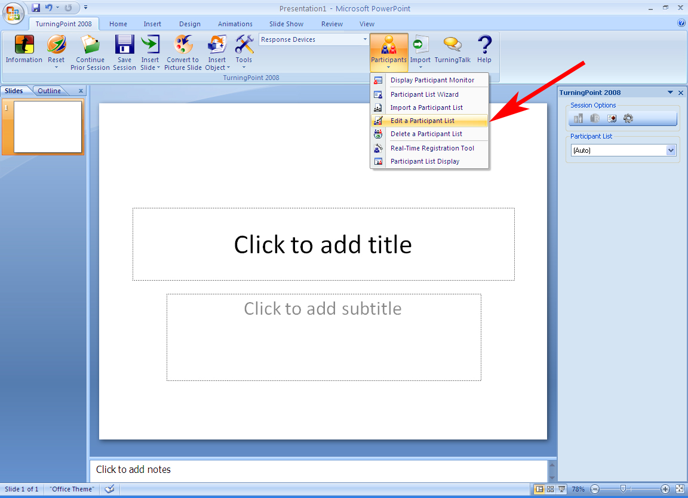
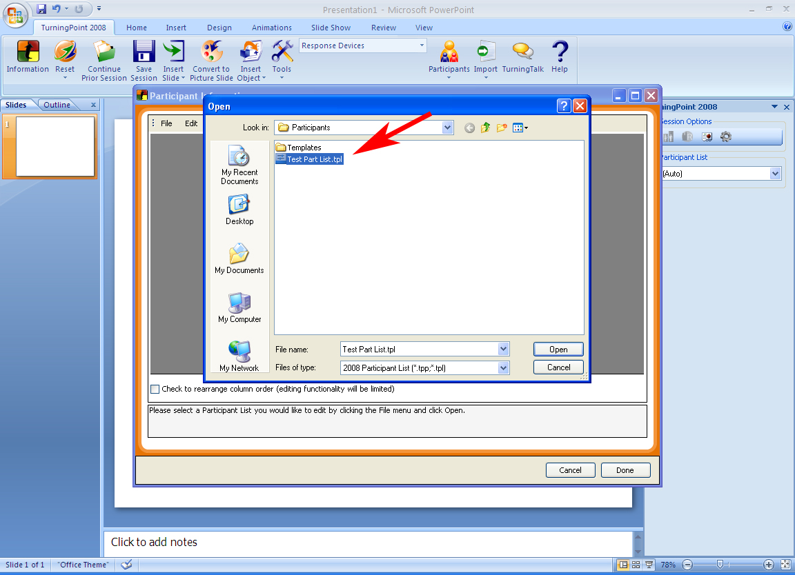
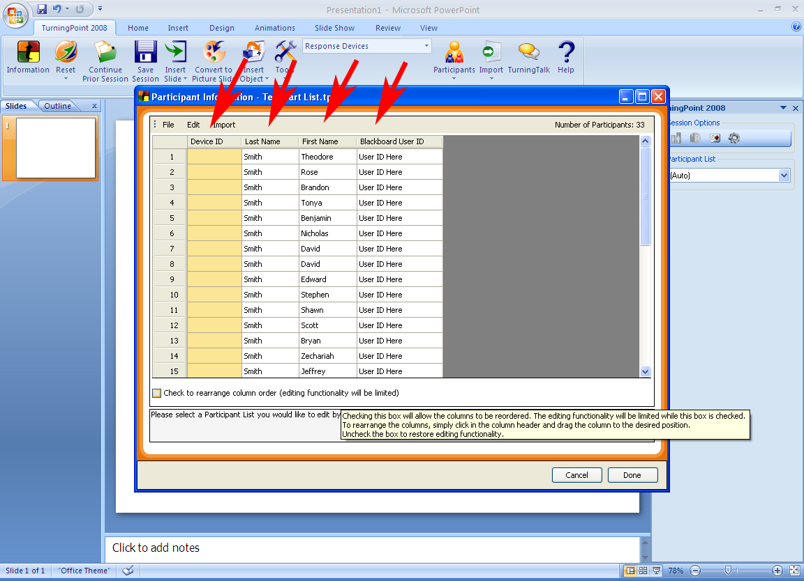
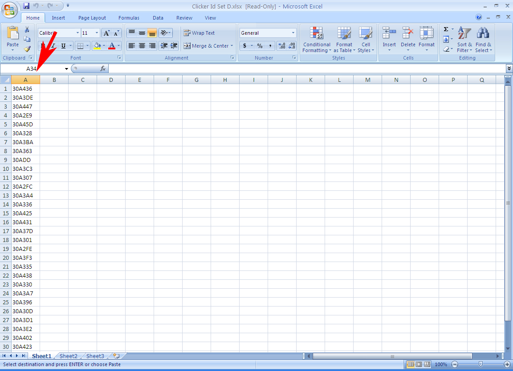
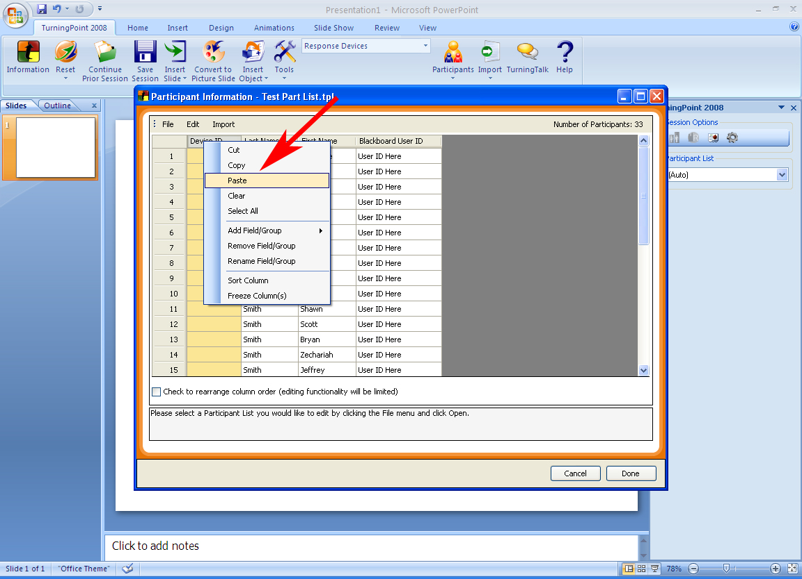
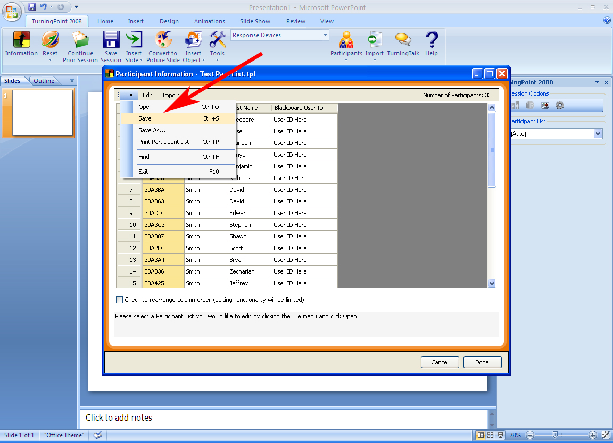

Edit a Participant List and Assign Clickers to Participants
After you have imported a participant list using one of the methods listed above, you must still assign Device IDs located on the back of you clickers to individual students. This is the only way to ensure that session data is recorded to the correct student.
- From the TurningPoint Tab click on “Participants”. A drop-down will appear. Select “Edit a Participant List” from the drop-down list.
- Select the Participant List you wish to edit and click “Open”.
- The "Participation Information” window opens. There will be four columns: “Device ID”, “Last Name”, “First Name”, and the student’s “Blackboard User ID”.
- A Microsoft Excel spreadsheet file unique to your TurningPoint clickers will be provided to you when you receive your set. Open Microsoft Excel and open your spreadsheet file and you will see a single column that contains your set’s Device IDs.
- Click and drag to select ALL the Device IDs. Click the RIGHT mouse button on the highlighted data and select “Copy” from the drop-down list. Navigate back to TurningPoint.
- In the “Participant Information” window, RIGHT CLICK the “Device ID” column header and select “Paste” from the drop-down list. The Device IDs from the Excel spreadsheet are pasted in to the TurningPoint Participant List.
- In the “Participant Information” window, click on “File” in the upper left-hand side of the window and select “Save”. Your Participant List is now updated and saved with Device IDs assigned to students.